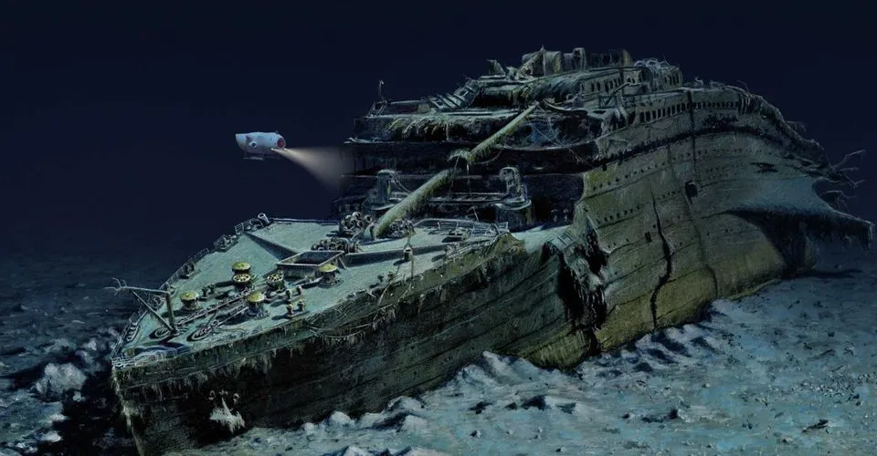
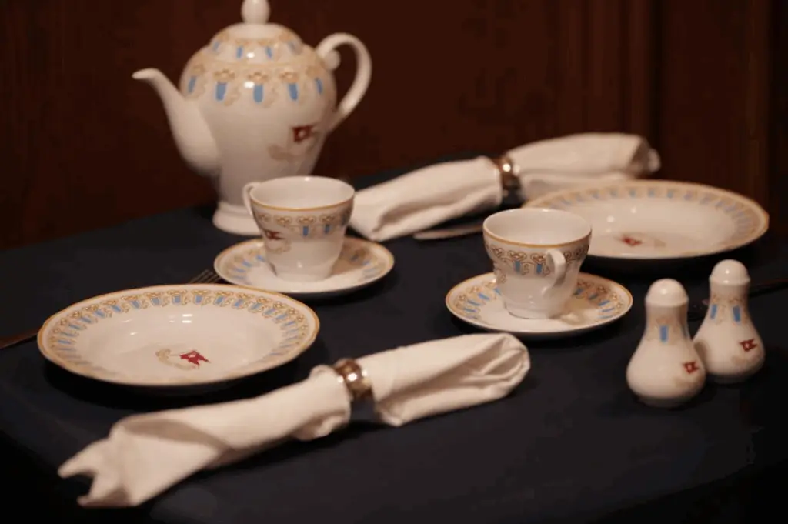
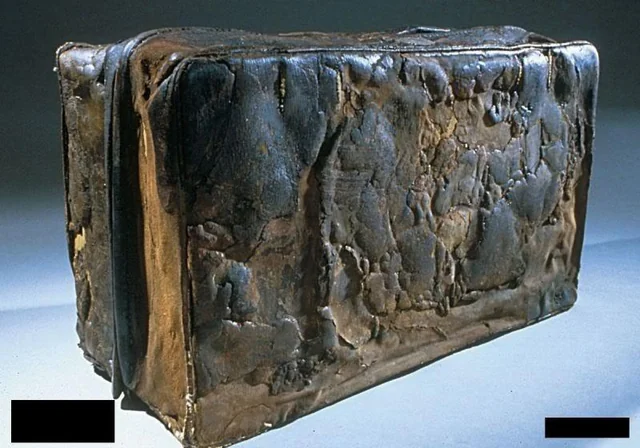

The Wreck Beneath the Ocean
Titanic disappeared beneath the North Atlantic in 1912, but its story did not end there. For decades, the location of the wreck remained unknown. In 1985, a joint American and French expedition discovered it deep below the ocean's surface. The discovery allowed researchers to examine physical evidence that had been hidden for more than seventy years.
The wreck lies in two main sections, surrounded by a large field of debris. Images of the bow reveal recognizable features of the famous ship, while other areas show the enormous damage caused by the disaster. Exploring the wreck requires specialized underwater equipment because of its depth, darkness, and water pressure. Photographs and recordings help researchers study it without bringing the entire structure to the surface.
Why is the wreck important?
It provides physical evidence about the ship's construction, its sinking, and the changes caused by decades underwater.
Objects That Tell Personal Stories
Small objects can make a historical event feel personal. Items associated with Titanic include tableware, luggage, letters, and belongings carried by passengers. Some objects were recovered from the seabed, while others survived because their owners carried them off the ship or left them with relatives before the voyage.
A plate can reveal how meals were served aboard. A letter can explain why someone was traveling. A suitcase may suggest the preparations made for a long journey. These objects help visitors imagine the everyday lives behind the headlines. However, researchers must carefully establish where each item came from. An object's history is essential when deciding what it can reliably tell us about the past.
What is an artifact?
An artifact is an object made or used by people that helps us understand their lives and history.
Artifact Gallery
This gallery presents three ways to explore Titanic's material history: the wreck itself, the tableware used aboard, and the personal belongings connected with its passengers. When examining an image, consider the object's material, purpose, and condition. Look for details that suggest how it was used or what happened to it over time.



Preserving the Evidence
Objects recovered from the ocean need careful conservation. Exposure to air can damage materials that have spent many years underwater. Museums also face questions about respectful display. Titanic is both a historical site and the place where many people died. Studying its artifacts should deepen understanding while respecting the people connected with them.
How should you examine a museum object?
Read its label, check its origin, and distinguish an original artifact from a replica or illustration.